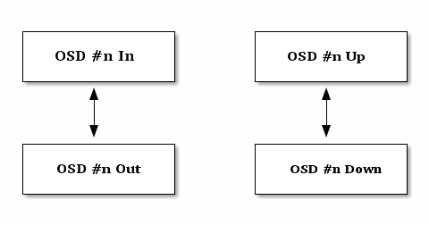
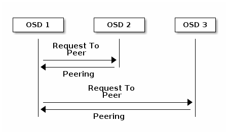

Monitoring OSDs and PGs¶
High availability and high reliability require a fault-tolerant approach to managing hardware and software issues. Ceph has no single point-of-failure, and can service requests for data in a “degraded” mode. Ceph’s data placement introduces a layer of indirection to ensure that data doesn’t bind directly to particular OSD addresses. This means that tracking down system faults requires finding the placement group and the underlying OSDs at root of the problem.
Tip
A fault in one part of the cluster may prevent you from accessing a particular object, but that doesn’t mean that you can’t access other objects. When you run into a fault, don’t panic. Just follow the steps for monitoring your OSDs and placement groups. Then, begin troubleshooting.
Ceph is generally self-repairing. However, when problems persist, monitoring OSDs and placement groups will help you identify the problem.
Monitoring OSDs¶
An OSD’s status is either in the cluster (in) or out of the cluster (out); and, it is either up and running (up), or it is down and not running (down). If an OSD is up, it may be either in the cluster (you can read and write data) or it is out of the cluster. If it was in the cluster and recently moved out of the cluster, Ceph will migrate placement groups to other OSDs. If an OSD is out of the cluster, CRUSH will not assign placement groups to the OSD. If an OSD is down, it should also be out.
Note
If an OSD is down and in, there is a problem and the cluster will not be in a healthy state.

If you execute a command such as ceph health, ceph -s or ceph -w, you may notice that the cluster does not always echo back HEALTH OK. Don’t panic. With respect to OSDs, you should expect that the cluster will NOT echo HEALTH OK in a few expected circumstances:
- You haven’t started the cluster yet (it won’t respond).
- You have just started or restarted the cluster and it’s not ready yet, because the placement groups are getting created and the OSDs are in the process of peering.
- You just added or removed an OSD.
- You just have modified your cluster map.
An important aspect of monitoring OSDs is to ensure that when the cluster is up and running that all OSDs that are in the cluster are up and running, too. To see if all OSDs are running, execute:
ceph osd stat
The result should tell you the map epoch (eNNNN), the total number of OSDs (x), how many are up (y) and how many are in (z).
eNNNN: x osds: y up, z in
If the number of OSDs that are in the cluster is more than the number of OSDs that are up, execute the following command to identify the ceph-osd daemons that aren’t running:
ceph osd tree
dumped osdmap tree epoch 1
# id weight type name up/down reweight
-1 2 pool openstack
-3 2 rack dell-2950-rack-A
-2 2 host dell-2950-A1
0 1 osd.0 up 1
1 1 osd.1 down 1
Tip
The ability to search through a well-designed CRUSH hierarchy may help you troubleshoot your cluster by identifying the physcial locations faster.
If an OSD is down, start it:
sudo /etc/init.d/ceph -a start osd.1
See OSD Not Running for problems associated with OSDs that stopped, or won’t restart.
PG Sets¶
When CRUSH assigns placement groups to OSDs, it looks at the number of replicas for the pool and assigns the placement group to OSDs such that each replica of the placement group gets assigned to a different OSD. For example, if the pool requires three replicas of a placement group, CRUSH may assign them to osd.1, osd.2 and osd.3 respectively. CRUSH actually seeks a pseudo-random placement that will take into account failure domains you set in your CRUSH map, so you will rarely see placement groups assigned to nearest neighbor OSDs in a large cluster. We refer to the set of OSDs that should contain the replicas of a particular placement group as the Acting Set. In some cases, an OSD in the Acting Set is down or otherwise not able to service requests for objects in the placement group. When these situations arise, don’t panic. Common examples include:
- You added or removed an OSD. Then, CRUSH reassigned the placement group to other OSDs–thereby changing the composition of the Acting Set and spawning the migration of data with a “backfill” process.
- An OSD was down, was restared, and is now recovering.
- An OSD in the Acting Set is down or unable to service requests, and another OSD has temporarily assumed its duties.
Ceph processes a client request using the Up Set, which is the set of OSDs that will actually handle the requests. In most cases, the Up Set and the Acting Set are virtually identical. When they are not, it may indicate that Ceph is migrating data, an OSD is recovering, or that there is a problem (i.e., Ceph usually echoes a “HEALTH WARN” state with a “stuck stale” message in such scenarios).
To retrieve a list of placement groups, execute:
ceph pg dump
To view which OSDs are within the Acting Set or the Up Set for a given placement group, execute:
ceph pg map {pg-num}
The result should tell you the osdmap epoch (eNNN), the placement group number ({pg-num}), the OSDs in the Up Set (up[]), and the OSDs in the acting set (acting[]).
osdmap eNNN pg {pg-num} -> up [0,1,2] acting [0,1,2]
Note
If the Up Set and Acting Set do not match, this may be an indicator that the cluster rebalancing itself or of a potential problem with the cluster.
Peering¶
Before you can write data to a placement group, it must be in an active state, and it should be in a clean state. For Ceph to determine the current state of a placement group, the primary OSD of the placement group (i.e., the first OSD in the acting set), peers with the secondary and tertiary OSDs to establish agreement on the current state of the placement group (assuming a pool with 3 replicas of the PG).

The OSDs also report their status to the monitor. See Configuring Monitor/OSD Interaction for details. To troubleshoot peering issues, see Peering Failure.
Monitoring Placement Group States¶
If you execute a command such as ceph health, ceph -s or ceph -w, you may notice that the cluster does not always echo back HEALTH OK. After you check to see if the OSDs are running, you should also check placement group states. You should expect that the cluster will NOT echo HEALTH OK in a number of placement group peering-related circumstances:
- You have just created a pool and placement groups haven’t peered yet.
- The placement groups are recovering.
- You have just added an OSD to or removed an OSD from the cluster.
- You have just modified your CRUSH map and your placement groups are migrating.
- There is inconsistent data in different replicas of a placement group.
- Ceph is scrubbing a placement group’s replicas.
- Ceph doesn’t have enough storage capacity to complete backfilling operations.
If one of the foregoing circumstances causes Ceph to echo HEALTH WARN, don’t panic. In many cases, the cluster will recover on its own. In some cases, you may need to take action. An important aspect of monitoring placement groups is to ensure that when the cluster is up and running that all placement groups are active, and preferably in the clean state. To see the status of all placement groups, execute:
ceph pg stat
The result should tell you the placement group map version (vNNNNNN), the total number of placement groups (x), and how many placement groups are in a particular state such as active+clean (y).
vNNNNNN: x pgs: y active+clean; z bytes data, aa MB used, bb GB / cc GB avail
Note
It is common for Ceph to report multiple states for placement groups.
In addition to the placement group states, Ceph will also echo back the amount of data used (aa), the amount of storage capacity remaining (bb), and the total storage capacity for the placement group. These numbers can be important in a few cases:
- You are reaching your near full ratio or full ratio.
- Your data isn’t getting distributed across the cluster due to an error in your CRUSH configuration.
Placement Group IDs
Placement group IDs consist of the pool number (not pool name) followed by a period (.) and the placement group ID–a hexadecimal number. You can view pool numbers and their names from the output of ceph osd lspools. The default pool names data, metadata and rbd correspond to pool numbers 0, 1 and 2 respectively. A fully qualified placement group ID has the following form:
{pool-num}.{pg-id}
And it typically looks like this:
0.1f
To retrieve a list of placement groups, execute the following:
ceph pg dump
You can also format the output in JSON format and save it to a file:
ceph pg dump -o {filename} --format=json
To query a particular placement group, execute the following:
ceph pg {poolnum}.{pg-id} query
Ceph will output the query in JSON format.
{
"state": "active+clean",
"up": [
1,
0
],
"acting": [
1,
0
],
"info": {
"pgid": "1.e",
"last_update": "4'1",
"last_complete": "4'1",
"log_tail": "0'0",
"last_backfill": "MAX",
"purged_snaps": "[]",
"history": {
"epoch_created": 1,
"last_epoch_started": 537,
"last_epoch_clean": 537,
"last_epoch_split": 534,
"same_up_since": 536,
"same_interval_since": 536,
"same_primary_since": 536,
"last_scrub": "4'1",
"last_scrub_stamp": "2013-01-25 10:12:23.828174"
},
"stats": {
"version": "4'1",
"reported": "536'782",
"state": "active+clean",
"last_fresh": "2013-01-25 10:12:23.828271",
"last_change": "2013-01-25 10:12:23.828271",
"last_active": "2013-01-25 10:12:23.828271",
"last_clean": "2013-01-25 10:12:23.828271",
"last_unstale": "2013-01-25 10:12:23.828271",
"mapping_epoch": 535,
"log_start": "0'0",
"ondisk_log_start": "0'0",
"created": 1,
"last_epoch_clean": 1,
"parent": "0.0",
"parent_split_bits": 0,
"last_scrub": "4'1",
"last_scrub_stamp": "2013-01-25 10:12:23.828174",
"log_size": 128,
"ondisk_log_size": 128,
"stat_sum": {
"num_bytes": 205,
"num_objects": 1,
"num_object_clones": 0,
"num_object_copies": 0,
"num_objects_missing_on_primary": 0,
"num_objects_degraded": 0,
"num_objects_unfound": 0,
"num_read": 1,
"num_read_kb": 0,
"num_write": 3,
"num_write_kb": 1
},
"stat_cat_sum": {
},
"up": [
1,
0
],
"acting": [
1,
0
]
},
"empty": 0,
"dne": 0,
"incomplete": 0
},
"recovery_state": [
{
"name": "Started\/Primary\/Active",
"enter_time": "2013-01-23 09:35:37.594691",
"might_have_unfound": [
],
"scrub": {
"scrub_epoch_start": "536",
"scrub_active": 0,
"scrub_block_writes": 0,
"finalizing_scrub": 0,
"scrub_waiting_on": 0,
"scrub_waiting_on_whom": [
]
}
},
{
"name": "Started",
"enter_time": "2013-01-23 09:35:31.581160"
}
]
}
The following subsections describe common states in greater detail.
Creating¶
When you create a pool, it will create the number of placement groups you specified. Ceph will echo creating when it is creating one or more placement groups. Once they are created, the OSDs that are part of a placement group’s Acting Set will peer. Once peering is complete, the placement group status should be active+clean, which means a Ceph client can begin writing to the placement group.
Peering¶
When Ceph is Peering a placement group, Ceph is bringing the OSDs that store the replicas of the placement group into agreement about the state of the objects and metadata in the placement group. When Ceph completes peering, this means that the OSDs that store the placement group agree about the current state of the placement group. However, completion of the peering process does NOT mean that each replica has the latest contents.
Authoratative History
Ceph will NOT acknowledge a write operation to a client, until all OSDs of the acting set persist the write operation. This practice ensures that at least one member of the acting set will have a record of every acknowledged write operation since the last successful peering operation.
With an accurate record of each acknowledged write operation, Ceph can construct and disseminate a new authoritative history of the placement group–a complete, and fully ordered set of operations that, if performed, would bring an OSD’s copy of a placement group up to date.
Active¶
Once Ceph completes the peering process, a placement group may become active. The active state means that the data in the placement group is generally available in the primary placement group and the replicas for read and write operations.
Clean¶
When a placement group is in the clean state, the primary OSD and the replica OSDs have successfully peered and there are no stray replicas for the placement group. Ceph replicated all objects in the placement group the correct number of times.
Degraded¶
When a client writes an object to the primary OSD, the primary OSD is responsible for writing the replicas to the replica OSDs. After the primary OSD writes the object to storage, the placement group will remain in a degraded state until the primary OSD has received an acknowledgement from the replica OSDs that Ceph created the replica objects successfully.
The reason a placement group can be active+degraded is that an OSD may be active even though it doesn’t hold all of the objects yet. If an OSD goes down, Ceph marks each placement group assigned to the OSD as degraded. The OSDs must peer again when the OSD comes back online. However, a client can still write a new object to a degraded placement group if it is active.
If an OSD is down and the degraded condition persists, Ceph may mark the down OSD as out of the cluster and remap the data from the down OSD to another OSD. The time between being marked down and being marked out is controlled by mon osd down out interval, which is set to 300 seconds by default.
A placement group can also be degraded, because Ceph cannot find one or more objects that Ceph thinks should be in the placement group. While you cannot read or write to unfound objects, you can still access all of the other objects in the degraded placement group.
Recovering¶
Ceph was designed for fault-tolerance at a scale where hardware and software problems are ongoing. When an OSD goes down, its contents may fall behind the current state of other replicas in the placement groups. When the OSD is back up, the contents of the placement groups must be updated to reflect the current state. During that time period, the OSD may reflect a recovering state.
Recovery isn’t always trivial, because a hardware failure might cause a cascading failure of multiple OSDs. For example, a network switch for a rack or cabinet may fail, which can cause the OSDs of a number of host machines to fall behind the current state of the cluster. Each one of the OSDs must recover once the fault is resolved.
Ceph provides a number of settings to balance the resource contention between new service requests and the need to recover data objects and restore the placement groups to the current state. The osd recovery delay start setting allows an OSD to restart, re-peer and even process some replay requests before starting the recovery process. The osd recovery threads setting limits the number of threads for the recovery process (1 thread by default). The osd recovery thread timeout sets a thread timeout, because multiple OSDs may fail, restart and re-peer at staggered rates. The osd recovery max active setting limits the number of recovery requests an OSD will entertain simultaneously to prevent the OSD from failing to serve . The osd recovery max chunk setting limits the size of the recovered data chunks to prevent network congestion.
Back Filling¶
When a new OSD joins the cluster, CRUSH will reassign placement groups from OSDs in the cluster to the newly added OSD. Forcing the new OSD to accept the reassigned placement groups immediately can put excessive load on the new OSD. Back filling the OSD with the placement groups allows this process to begin in the background. Once backfilling is complete, the new OSD will begin serving requests when it is ready.
During the backfill operations, you may see one of several states: backfill_wait indicates that a backfill operation is pending, but isn’t underway yet; backfill indicates that a backfill operation is underway; and, backfill_too_full indicates that a backfill operation was requested, but couldn’t be completed due to insufficient storage capacity. When a placement group can’t be backfilled, it may be considered incomplete.
Ceph provides a number of settings to manage the load spike associated with reassigning placement groups to an OSD (especially a new OSD). By default, osd_max_backfills sets the maximum number of concurrent backfills to or from an OSD to 10. The osd backfill full ratio enables an OSD to refuse a backfill request if the OSD is approaching its full ratio (85%, by default). If an OSD refuses a backfill request, the osd backfill retry interval enables an OSD to retry the request (after 10 seconds, by default). OSDs can also set osd backfill scan min and osd backfill scan max to manage scan intervals (64 and 512, by default).
Remapped¶
When the Acting Set that services a placement group changes, the data migrates from the old acting set to the new acting set. It may take some time for a new primary OSD to service requests. So it may ask the old primary to continue to service requests until the placement group migration is complete. Once data migration completes, the mapping uses the primary OSD of the new acting set.
Stale¶
While Ceph uses heartbeats to ensure that hosts and daemons are running, the ceph-osd daemons may also get into a stuck state where they aren’t reporting statistics in a timely manner (e.g., a temporary network fault). By default, OSD daemons report their placement group, up thru, boot and failure statistics every half second (i.e., 0.5), which is more frequent than the heartbeat thresholds. If the Primary OSD of a placement group’s acting set fails to report to the monitor or if other OSDs have reported the primary OSD down, the monitors will mark the placement group stale.
When you start your cluster, it is common to see the stale state until the peering process completes. After your cluster has been running for awhile, seeing placement groups in the stale state indicates that the primary OSD for those placement groups is down or not reporting placement group statistics to the monitor.
Identifying Troubled PGs¶
As previously noted, a placement group isn’t necessarily problematic just because its state isn’t active+clean. Generally, Ceph’s ability to self repair may not be working when placement groups get stuck. The stuck states include:
- Unclean: Placement groups contain objects that are not replicated the desired number of times. They should be recovering.
- Inactive: Placement groups cannot process reads or writes because they are waiting for an OSD with the most up-to-date data to come back up.
- Stale: Placement groups are in an unknown state, because the OSDs that host them have not reported to the monitor cluster in a while (configured by mon osd report timeout).
To identify stuck placement groups, execute the following:
ceph pg dump_stuck [unclean|inactive|stale|undersized|degraded]
See Placement Group Subsystem for additional details. To troubleshoot stuck placement groups, see Troubleshooting PG Errors.
Finding an Object Location¶
To store object data in the Ceph Object Store, a Ceph client must:
- Set an object name
- Specify a pool
The Ceph client retrieves the latest cluster map and the CRUSH algorithm calculates how to map the object to a placement group, and then calculates how to assign the placement group to an OSD dynamically. To find the object location, all you need is the object name and the pool name. For example:
ceph osd map {poolname} {object-name}
Exercise: Locate an Object
As an exercise, lets create an object. Specify an object name, a path to a test file containing some object data and a pool name using the rados put command on the command line. For example:
rados put {object-name} {file-path} --pool=data
rados put test-object-1 testfile.txt --pool=data
To verify that the Ceph Object Store stored the object, execute the following:
rados -p data ls
Now, identify the object location:
ceph osd map {pool-name} {object-name}
ceph osd map data test-object-1
Ceph should output the object’s location. For example:
osdmap e537 pool 'data' (0) object 'test-object-1' -> pg 0.d1743484 (0.4) -> up [1,0] acting [1,0]
To remove the test object, simply delete it using the rados rm command. For example:
rados rm test-object-1 --pool=data
As the cluster evolves, the object location may change dynamically. One benefit of Ceph’s dynamic rebalancing is that Ceph relieves you from having to perform the migration manually. See the Architecture section for details.